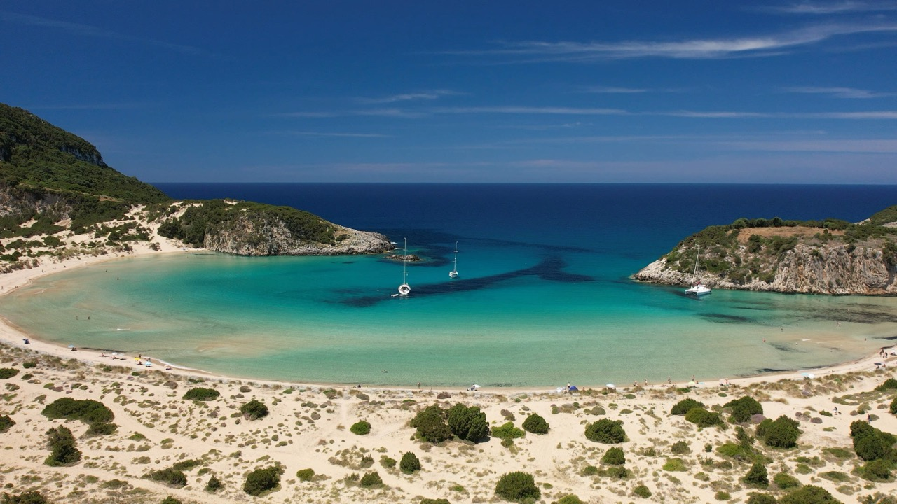

Press play, pack later
Every trip we've filmed around Greece and the Peloponnese, from four-week road trips to island hops. Pick a place or a series to start.
POST CARD
Wish you were here! Come and watch all our adventures. M & J x

just landed · 11:28
Why the seaside town of Ermioni makes a brilliant base: two waterfronts, the Bisti Peninsula walk, and easy trips over to Hydra, Poros and Porto Cheli.
{{countLabel}}